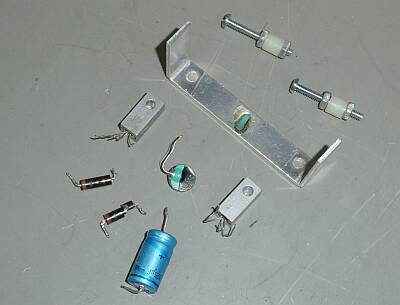
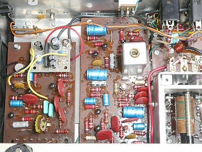
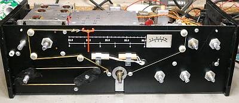
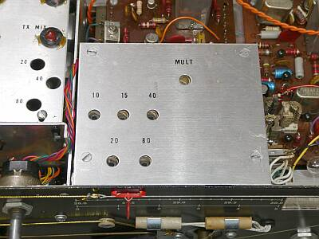
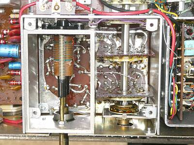
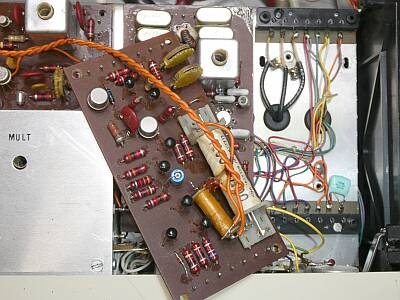
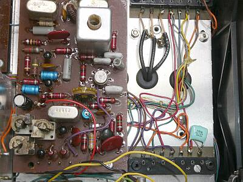
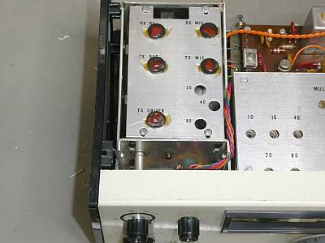
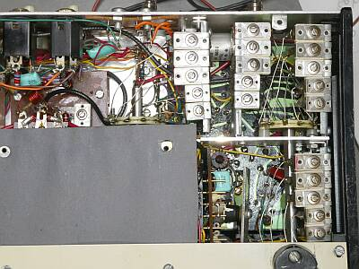
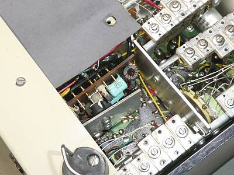

 |
10数年ぶりに通電したら壊れた！
通電最初は、ポツッとかスピーカーが鳴っていたのですが、全くうんもすんも言わなくなりました
ＡＦパワーアンプ終段Ｔｒがコンプリ２つともＥ－Ｃ間がショートしていました
当時の部品は、簡単に入手できません
ｅＢａｙなどにはあったのですが、放熱器がカシメてあり、そのまま交換とはいきません
使えそうなＴｒを探しましたがジャンク箱からでてきません
送信はすれど、ＳＳＧの信号も全く受信できません
写真は、今回の修理（改造）で取り外した部品 |
 |
実用本位でＩＣ化したのが、この写真です
結果は、極めて良好でした
色の白い基板が追加した１．１Wオーディオアンプ
スペーサを使って、２段に取り付けています
元のＡＦ基板から最低の接続です
・送信時ミュート
・ＣＷ送信時のサイドトーン
・＋／－電源
左下に見える半固定ＶＲは、サイドトーン音量調整用です（底板に穴が開いていて、指で調整可能）
右に見える基板は、IFユニット |
 |
ゴム紐が伸び切って、ダイヤル・カーソルが正しく移動しません
ダイヤル・カーソルは、ＶＦＯダイヤル軸にダイヤル糸を巻き取るだけ・・・どうやって戻す？ ゴム紐で引っ張って、です
金色に見えている部分が、交換したゴム紐です
バンド切替のＳＷの連動も紐かけです |
 |
特徴の一つは、ＶＦＯの使い方です
ＶＦＯ自体は５～７ＭＨｚを発振するＰＴＯタイプ
ＶＦＯ上蓋には、バンド毎に発振周波数調整用の穴が開けられています
その周波数の範囲と利用が特徴的で
各バンドごとに、発振周波数を切り替えて使用
詳しくは下段で |
 |
そのVFOの内部です
コリンズ・ドレーク同様のスラグチューン方式が採用されています
この写真では、上下方向に動きます
アルミダイキャストのフレームに、がっちり組まれています
バンド切替SWが組み入れられています |
 |
ユニット化された基板で構成されています
メインシャーシを間にしてピンソケット接続です
この外したコントロール・ユニットの下に今回問題を起こしたＡＦ基板があります
そのＡＦ基板は、長いビスでメインシャーシに取り付ける構造で、新たな基板の取付には不都合です |
 |
ご覧の様にスペーサを用意して、新しいAF基板の取付を可能にしました
見えている基板は、SSBジェネレータ・ユニット |
 |
ＲＦ同調部
ＶＦＯ同様に、スラグチューン方式が採用されています
（ＦＴ-１０１と同様）
長四角のアルミ板全体が上下に動き、取り付けられた５個のダスト・コアが上下します |
 |
ＲＦ同調機構部のシャーシ下側
トラッキング調整部です
上側３列の左右は、受信調整
真ん中が送信調整
下側は、送信ドライブ調整
いずれも上から３．５NHｚ帯→２８ＭＨｚ帯で
タイト・トリマが採用されています |
 |
送信ファイナル部は、こんなところに
アルミ板は、ヒートシンクです |
本機は、ＩＦが９ＭＨｚのシングル・コンバージョン方式が採用されています
Ｍｉｘ一発でＩＦ周波数に変換ができるよう、ＶＦＯの使い方に工夫があります
５．０～７．０ＭＨｚの範囲を発振するＶＦＯなのですが、バンドによって発振周波数が異なります
ＳＷＡＮ製品ではＶＦＯは、変換のために高い周波数を一発で発振させています（スプリアス的には有利、ドリフトには問題がある）が、本機では逓倍によって必要な周波数を得ています
|
ＶＦＯ発振周波数 |
逓倍数 |
Mixへの出力 |
| ３．５MHｚ帯 |
６．２５～６．５ＭＨｚ |
２ |
１２．５～１３．０ＭＨｚ |
| ７ＭＨｚ帯 |
５．３３３～５．５ＭＨｚ |
３ |
１６．０～１６．５ＭＨｚ |
| １４ＭＨｚ帯 |
５．０～５．５ＭＨｚ |
（なし） |
５．０～５．５ＭＨｚ |
| ２１ＭＨｚ帯 |
６．０～６．２５ＭＨｚ |
２ |
１２．０～１２．５ＭＨｚ |
| ２８ＭＨｚ帯 |
６．３３３～７．０ＭＨｚ |
３ |
１９．０～２１．０ＭＨｚ |
３．５～２１ＭＨｚ帯にあっては、ダイヤル1回転あたり、おおよそ１５ＫＨｚ
１００ＫＨｚ幅をバーニア機構で１／６に減速して、という使い方です（ＦＴ-１０１と同様）
２８MHｚ帯にあっては、おおよそダイヤル８回転で５００ＫＨｚ、約６５ＫＨｚ／１回転です
スラグチューンのＲＦ同調をきちんと取らないと、スプリアスに合わせてしまうことにも・・・
ＱＲＰだから出来た手法かもしれません（同じ機構のＦＴ-１０１も同様の問題がある、現行電波法規定にマッチしない）
ＷＷＶ（１５MHｚ）受信で、ダイヤル周波数校正
２１ＭＨｚバンドのみですが、ＲＦ同調ツマミで４０～８０ｍの間でチューンを取ることで、
２１．０００＝１５．０００ＭＨｚの周波数校正ができます
ＶＦＯ基本発振周波数を使う・・・です
ダイヤル・リニアリティや周波数安定度なども、逓倍により影響を受けます
長時間のＱＳＯでなければ、運用に実用上問題ない範囲かと思われます（周波数読み取りは５～１０ＫＨｚの幅というか誤差がある）
９ＭＨｚ ＩＦ
クリスタル・フィルタは、４ポール構成で、
－６ｄｂ帯域幅 ２．４ＫＨｚ
シェープ・ファクタは、１．７（６／５０ｄＢ）という仕様です
ＡＧＣは、オーディオ検出型
Ｓメーター表示
１５μＶ入力で、３．５/７ＭＨｚ帯では、Ｓ８程度
１４～２８ＭＨｚ帯では、Ｓ９程度を示します
Ｓメータの振れについては、零点調整があるのみです
送信メーター表示
進行波と反射波を切り替えて表示できます
すなわち、ＳＷＲ計内臓です
終段がトランジスタということもあり、移動時の仮設アンテナなどを意識したものと思われます
得られた結果です
ローバンドの結果が、ハイバンドに比べイマイチの結果でしたが、スペックはクリアしています
送信：２．５Ｗ以上 受信：０．５μＶ信号ON/OFFで、S/N１０ｄｂ以上
（１４ＭＨｚ帯以上の送信出力は、スペックよりはるかに大きい）
|
送信出力 |
受信感度 信号のON/OFFのより
S/N１０ｄｂが得られる信号強度 |
| ３．５ＭＨｚ帯 |
３Ｗ |
０．５μＶ |
| ７ＭＨｚ帯 |
３Ｗ |
０．５μV |
| １４ＭＨｚ帯 |
５Ｗ |
０．３μＶ |
| ２１ＭＨｚ帯 |
４．５Ｗ |
０．３μＶ |
| ２８MＨｚ帯 |
４Ｗ |
０．３μＶ |
ＤＣ１２．５Ｖ動作時 ５０Ω負荷
送信時に流れる電流は、おおよそ１Aで、バンドごとに大差はありません
ＱＲＰ運用に向けた、いろんな工夫のある極めてアマチュアライクなトランシーバだといえると思います |